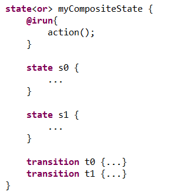
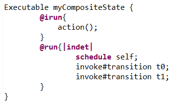
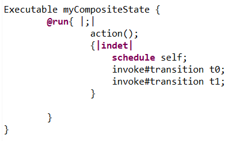
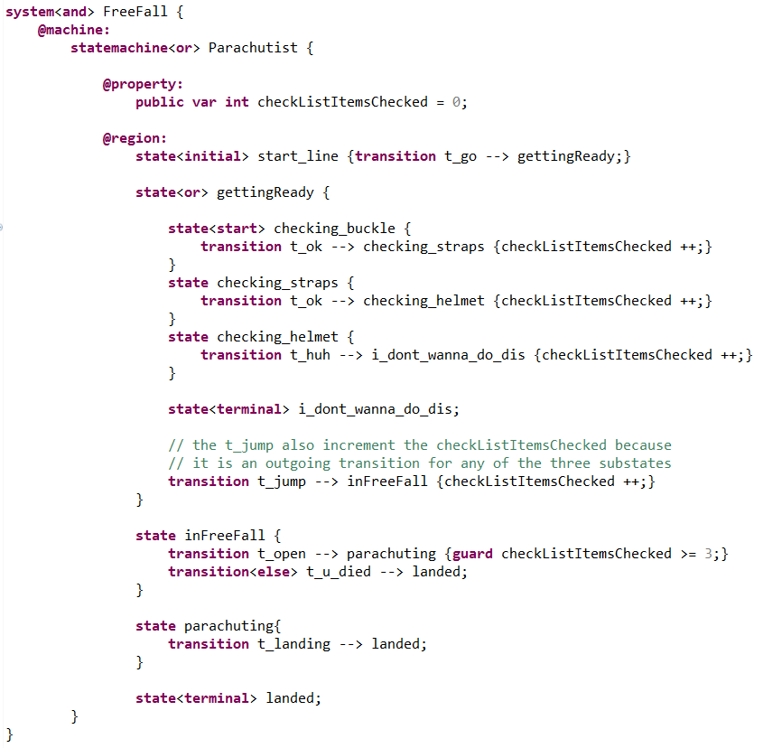
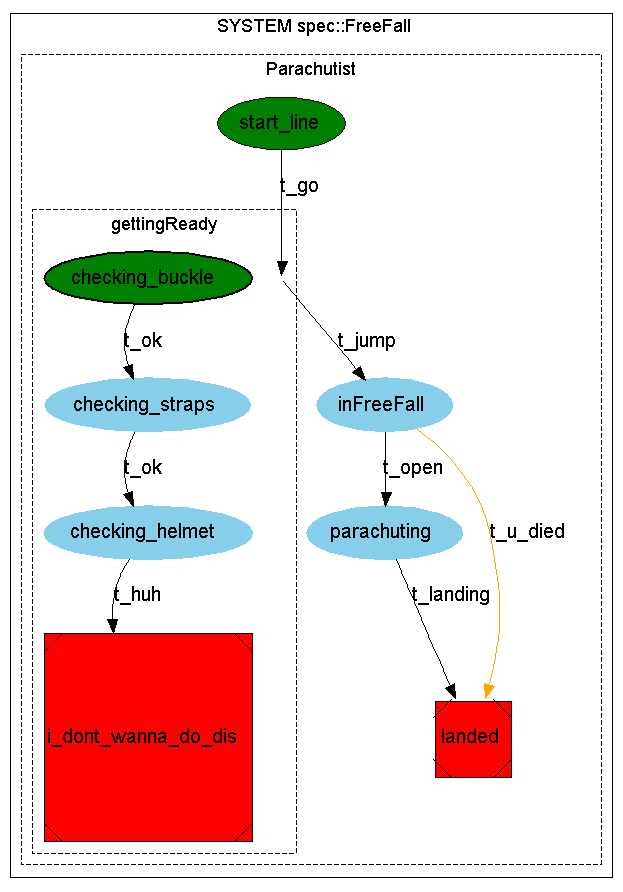
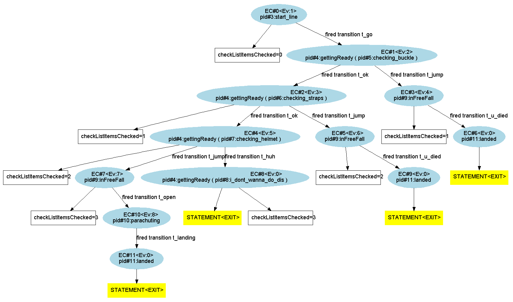
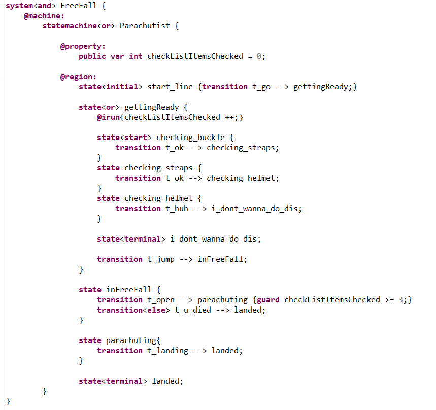

When we have a composite state :
When we implement the @irun{...} activity primitive and we put an instruction "action();" inside such as below :
The XLIA compiler interprets it as in the following :
Which is equivalent to :
We notice that the "action();" is always taken beforehand, whatever the next step is. This is different than what happens when using the "@run{...}" primitive of composite states.
Unlike the previous case, we will consider a composite state :
Let's consider the following example. A parachutist is getting ready to do some parachutism.
He must check three pieces of equipment : a buckle, some straps and a helmet. Therefore, in the "gettingReady" state, there are 3 substates :
At any given time, he can jump out of the plane and gets into the "inFreeFall" state. If he waits too long, he gets into the "i_dont_wanna_do_dis" terminal state.
According to the thoroughness of the equipment check, the fall can end in a good or in a bad way.
For each outgoing transition from any substate of "gettingReady", we write an instruction that increments the "checkListItemsChecked" integer. This allows keeping track of how many items have been checked.
The code is the following :
And here the system's graph :
We get the following exploration graph, which respects our specifications :
We can obtain exactly the same system by factorizing the incrementation of the "checkListItemsChecked" integer into the "@irun{...}" of the composite state "gettingReady" as in the following code :
The instruction within the "@irun{...}" of "gettingReady" is executed each time :
The system's graph and the exploration graph are exactly the same as in the implementation without "@irun{...}".